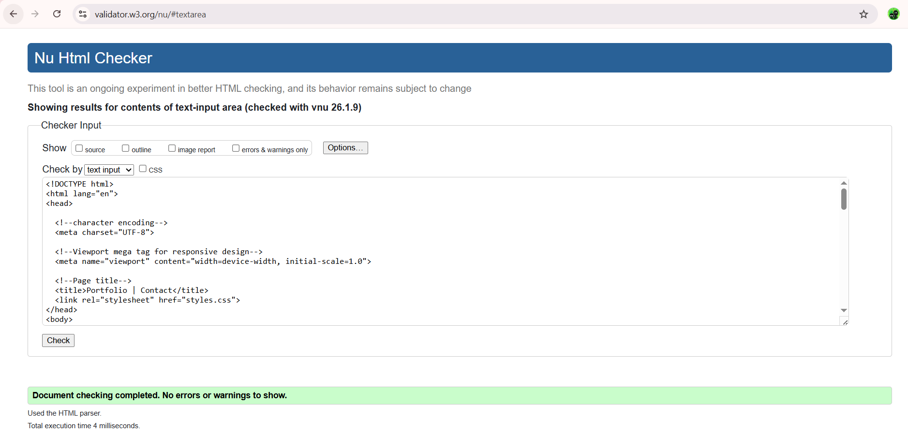
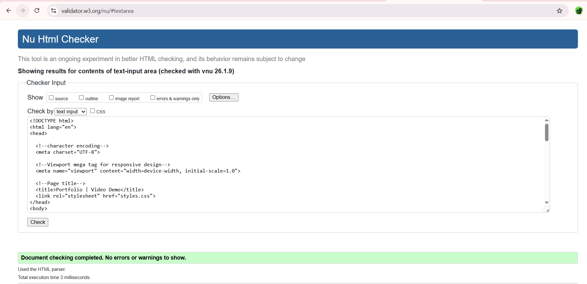
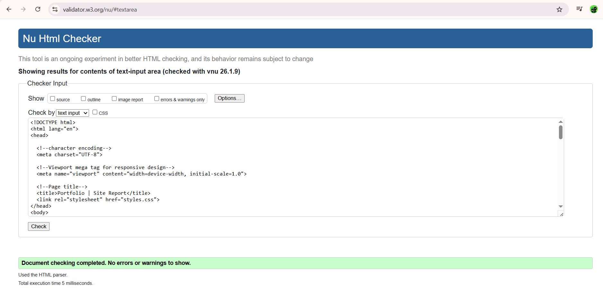
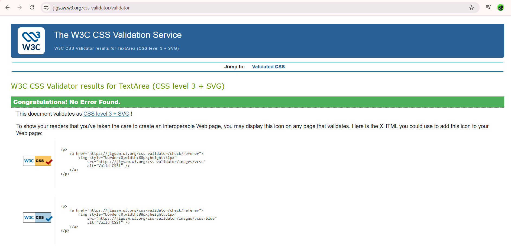

Site Report
I have created this portfolio website as part of a web development project to practice using HTML and CSS. The main goal was to create a resposnive designed mutlitle page website using HTML for building the structure of the web pages and CSS for designing and styling them. Proper HTML tags were used to create this website such as header, nav, division and footer. CSS feactures like flexbox, padding, margin and media queries were used to make this portfolio website responsive and works smoothly on both mobile-desktop interface.
While designing this website, my main aim was to make this website user-friendly so users could feel free and easier to move around the website. I faced many challenges while designing this website. The main challenge was to make the layout responsive and look good on different screens. Adjusting the navigation menu for mobile and desktop interface required careful use of CSS and media queries. Another challenge was aligning elements carefully when using flexbox and grid. SOmetimes elements overlapped or moved out of their orginal place, which took time to fix and run properly. Also keeping the footer at bottom was so difficult, especially on the pages which has less content. I had to test and modify the CSS elements mutliple times to solve these issues.
Throughout this project, I learned about how websites are built and styled using HTML and CSS. I understood the importance of planning layouts on different interfaces. In conclusion, this project helped me enhanced my skills in HTML and CSS which will automatically built my confidence in creating furthermore user-friendly website. It was a valuable learning experience that nourished my understanding of web development.
Validation Evidence
HTML validation for index page

HTML validation for projects page
HTML validation for contact page
HTML validation for Video Demo page
HTML validation for site report page
CSS validation